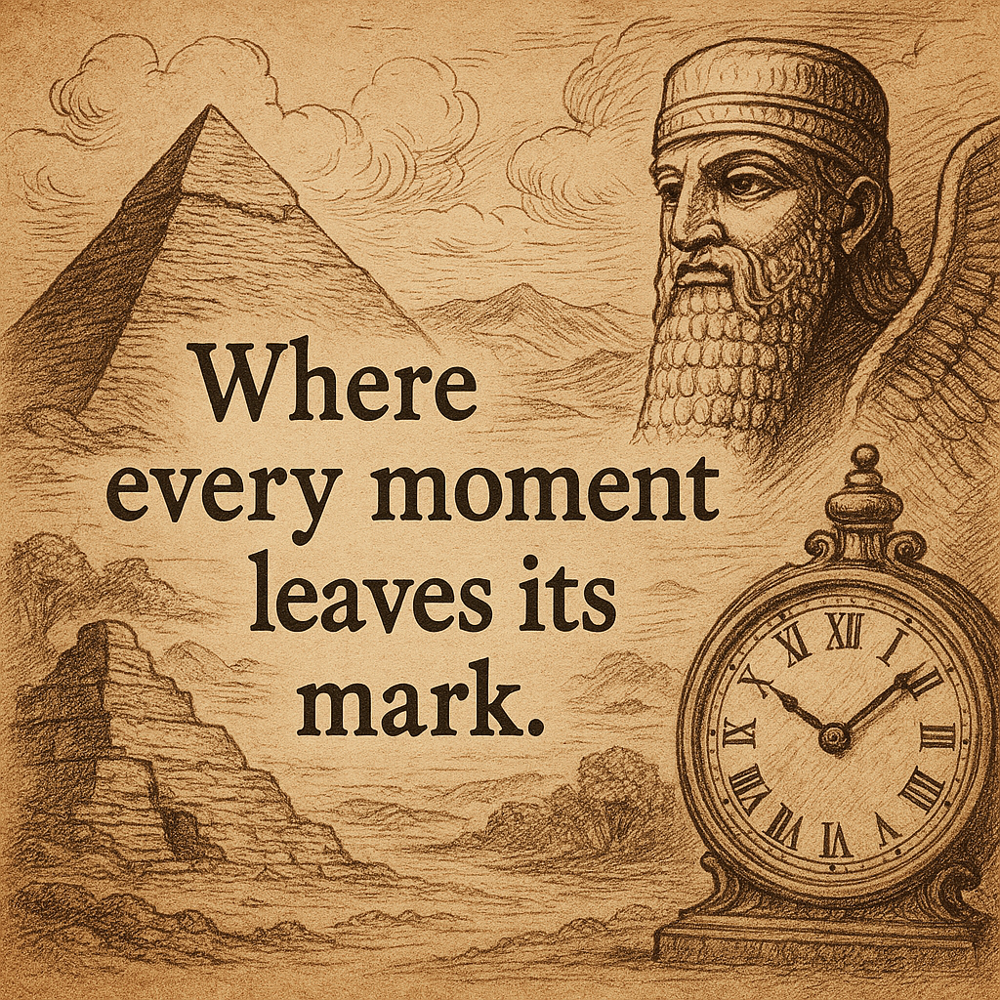

Welcome to Chronicles of Ink & Time
A journey through timeless stories, ancient mysteries, and the boundless universe of imagination. In this space, I explore the fascinating worlds of manhwa and manga, where art and storytelling intertwine to create unforgettable adventures. At the same time, I dive into the depths of ancient civilizations and extraterrestrial mysteries, uncovering the secrets of lost worlds, unsolved theories, and the possibility that history is far more mysterious than we imagine.
About Me
Hello! I’m Daniel N. Larayos, the creator of Chronicles of Ink & Time. I have a deep passion for manhwa, manga, and the mysteries of ancient civilizations. Through this website, I share my love for storytelling, history, and the unknown.
For more information click here
HERE'S MY FAVORITE AND RECOMMENDATIONS
SOLO LEVELING

Title: Solo Leveling (나 혼자만 레벨업)
Author: Chugong (original web novel)
Artist: Dubu (REDICE Studio)
Genre: Action, Fantasy, Adventure, Supernatural, Shonen
Original Run: March 2018 – December 2021
Chapters: 179 (Completed)
Adaptations: Anime (2024), Light Novel, and a Side Story
📖 Story Synopsis
In a world where portals known as "Gates" connect reality to dungeons filled with monsters, humans with supernatural abilities—called Hunters—fight to protect society. Sung Jin-Woo, the weakest E-rank hunter, struggles to survive in this brutal world. However, after a near-death experience in a mysterious double dungeon, he awakens a unique ability—the System—that allows him to level up beyond human limits. From that moment on, he embarks on a journey to become the strongest hunter, uncovering dark secrets about the world and his newfound powers.
🎯 Why You Should Read It
If you love power fantasy, dungeon-crawling adventures, and epic fight scenes, Solo Leveling is a must-read. It combines an engaging story with jaw-dropping artwork, making it one of the most popular manhwa of all time.ELECEED
Title: Eleceed (일렉시드)
Author: Son Jae-ho (Noblesse)
Artist: ZHENA (Girls of the Wild's)
Genre: Action, Comedy, Supernatural, School Life
Original Run: 2018 – Ongoing
Chapters: 200+ (ongoing)
Status: Still publishing weekly
📖 Story Synopsis
Eleceed follows Jiwoo Seo, a kind-hearted boy with an extraordinary ability—superhuman speed, much like a cat’s reflexes. One day, he encounters Kayden, a powerful awakened being who, due to unforeseen circumstances, is stuck in the body of a chubby cat. Together, they form an unlikely duo, training Jiwoo’s abilities while navigating the dangerous world of awakened fighters and secret organizations. As Jiwoo grows stronger, he finds himself entangled in battles against powerful enemies, all while protecting those he cares about.
🎯 Why You Should Read It
If you love intense battles, a unique mentor-student dynamic, hilarious moments, and strong friendships, Eleceed is a fantastic choice. It offers an action-packed yet heartwarming journey that keeps readers hooked.THE BEGINNING AFTER THE END
Title: The Beginning After the End (TBATE)
Author: TurtleMe
Artist: Fuyuki23
Genre: Action, Fantasy, Adventure, Magic, Isekai
Original Run: 2018 – Ongoing
Chapters: 200+ (ongoing)
Status: Still publishing weekly
📖 Story Synopsis
In a world governed by magic and powerful nobles, King Grey, the strongest ruler in his world, mysteriously dies and is reincarnated into a new realm as Arthur Leywin. Retaining his past life’s memories, Arthur seeks a peaceful and fulfilling life in this magical world. However, as he discovers the secrets of mana, ancient beings, and looming threats, he realizes that destiny has other plans. With his past knowledge and newfound powers, Arthur embarks on a journey to protect his loved ones and uncover the mysteries of his second life.
🎯 Why You Should Read It
If you love fantasy adventures, magic academies, strong character development, and an MC with past-life wisdom, The Beginning After the End is a must-read. It combines action, strategy, and heartfelt moments in a beautifully crafted world.NANO MACHINE
Title: Nano Machine (나노마신)
Author: Han Jong-seok (Descent of the Demonic Master)
Artist: Geum Gangbulgoe
Genre: Action, Martial Arts, Fantasy, Sci-Fi, Murim
Original Run: 2020 – Ongoing
Chapters: 190+ (ongoing)
Status: Still publishing weekly
📖 Story Synopsis
Cheon Yeo-Woon, an orphan and the illegitimate son of the Demonic Cult, lives a life full of hardship and assassination attempts. His fate changes when a descendant from the future injects him with Nano Machine technology, granting him enhanced abilities, rapid healing, and an internal AI assistant. With this newfound power, he sets out to survive the brutal world of martial arts, climb the ranks of the Murim, and claim his rightful place as the strongest.
🎯 Why You Should Read It
If you love Murim stories, overpowered MCs, revenge-driven plots, and a mix of martial arts with futuristic technology, Nano Machine is a must-read. It delivers intense action, clever strategies, and thrilling power struggles that keep readers hooked.SUPERHUMAN BATTLEFLIELD
Title:Superhuman Battlefield (슈퍼human 배틀필드)
Author: Niccolo (Solo Bug Player)
Artist:Dope
Genre: Action, Fantasy, Sci-Fi, Sports, Superpowers
Original Run: 2020 – Ongoing
Chapters: 151 (Completed)
📖 Story Synopsis
Cheon Yeo-Woon, an orphan and the illegitimate son of the Demonic Cult, lives a life fulIn a world where portals known as "Gates" connect reality to dungeons filled with monsters, humans with supernatural abilities—called Hunters—fight to protect society. Sung Jin-Woo, the weakest E-rank hunter, struggles to survive in this brutal world. However, after a near-death experience in a mysterious double dungeon, he awakens a unique ability—the System—that allows him to level up beyond human limits. From that moment on, he embarks on a journey to become the strongest hunter, uncovering dark secrets about the world and his newfound powers.l of hardship and assassination attempts. His fate changes when a descendant from the future injects him with Nano Machine technology, granting him enhanced abilities, rapid healing, and an internal AI assistant. With this newfound power, he sets out to survive the brutal world of martial arts, climb the ranks of the Murim, and claim his rightful place as the strongest.
🎯 Why You Should Read It
If you love power fantasy, dungeon-crawling adventures, and epic fight scenes, Solo Leveling is a must-read. It combines an engaging story with jaw-dropping artwork, making it one of the most popular manhwa of all time.THE LEGEND OF THE NORTHEN BLADE
Title:The Legend of the Northern Blade (북검전기)
Author: Woo-Gak
Artist: HAE MIN
Genre: Action, Martial Arts, Fantasy, Adventure
Original Run: December 31, 2019 – December 2024
Chapters: 202 (Completed)
Status: Completed
📖 Story Synopsis
Cheon Yeo-Woon, an orphan and the illegitimate son of the Demonic Cult, lives a life fulIn a world where portals known as "Gates" connect reality to dungeons filled with monsters, humans with supernatural abilities—called Hunters—fight to protect society. Sung Jin-Woo, the weakest E-rank hunter, struggles to survive in this brutal world. However, after a near-death experience in a mysterious double dungeon, he awakens a unique ability—the System—that allows him to level up beyond human limits. From that moment on, he embarks on a journey to become the strongest hunter, uncovering dark secrets about the world and his newfound powers.l of hardship and assassination attempts. His fate changes when a descendant from the future injects him with Nano Machine technology, granting him enhanced abilities, rapid healing, and an internal AI assistant. With this newfound power, he sets out to survive the brutal world of martial arts, climb the ranks of the Murim, and claim his rightful place as the strongest.
🎯 Why You Should Read It
If you love power fantasy, dungeon-crawling adventures, and epic fight scenes, Solo Leveling is a must-read. It combines an engaging story with jaw-dropping artwork, making it one of the most popular manhwa of all time.LET'S DISCOVER THE HIDDEN MYSTERIES OF ANCIENT TIME
are you curios about the ancient civilizations and the mysteries of it?

LET US DIVE IN AND GO BACK TO THE PAST
LET THE ADVENTURE BEGIN